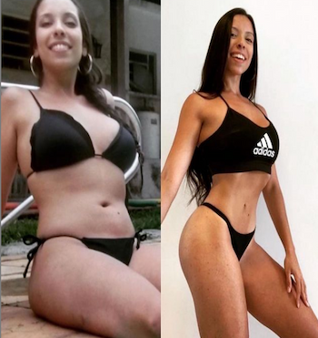
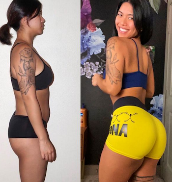
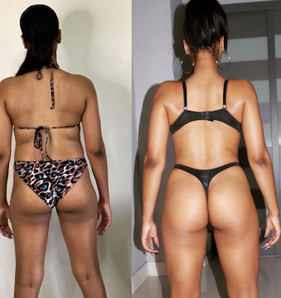
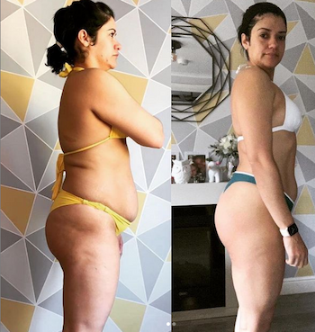
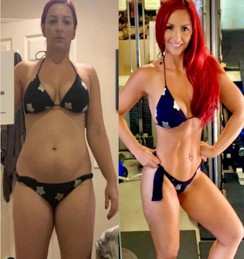

TRANSFORMACIONES
ROCIO ALVAREZ

Rocío, inició su programa de entrenamiento para mejorar su calidad de vida y así poder aumentar su energía durante el día.
Debido a su horario de trabajo, ella tenía poco tiempo para entrenar, por lo tanto seleccionamos los mejores horarios y empezamos con poco tiempo de entrenamiento.
Una de las ventajas que tiene el entrenamiento personal es que vos eliges la hora y el día para las clases.
"Entrenar con Carol Vaz fue una de las mejores experiencias de mi vida. Supo adaptarse a mis requerimientos físicos y alcanzar mis objetivos rápidamente."
ALEJANDRA GOMEZ

¿Qué es lo que más te gusta del entrenamiento?
"Que cada día es un reto, al principio pienso que no lo voy a lograr o que voy a terminar destruida al siguiente día, pero al final lo logro y me hace sentir capaz y satisfecha."
"Estaba muy insegura de mi cuerpo y me costaba conseguir resultados por mi propia cuenta, fué cuando vi los videos de Carol Vaz y me animé a escribirle.
Ella me dió la rutina justa para mi, obtuve resultados rápidamente."
SANDRA GARCIA

"Nos conocimos por casualidad, me contó lo que hacía y sin pensármelo dos veces, me comprometí a probar su entrenamiento al día siguiente. Han pasado tres meses desde aquello, de modo que, si eso no es poder de persuasión que baje Dios y lo vea. Carol te exige un esfuerzo tremendo y encima te lo pasas bien. Es su actitud lo que te engancha porque tiene la capacidad de inocularte el buen rollo incluso haciendo abdominales.
¿Qué más se puede pedir?
Vuelvo a estar en forma, me apetece hacer deporte y encima me divierto. Un diez."
"Me encuentro en un proceso de entrenamiento con Carol Vaz. Estoy muy felíz porque obtuve resulados rápidamente.
Antes me costaba mucho mantenerme motivada, ahora no pasa día sin entrenar y sentirme felíz por ello."
LISSETE GUZMAN

Lissete, madre de 2 hijas que supo organizar su calendario, para realizar 2 clases de entrenamiento semanales que le ayudaron a mejorar su salud.
El tiempo para ella no es excusa, tenemos que saber dedicarle tiempo a lo importante y necesario como por ejemplo entrenar y tener una buena alimentación.
"¡Miren todo lo que he avanzado! Estoy muy felíz. Entreno con Carol Vaz hace 2 meses y los resultados obtenidos son increíbles.
Su programa de entrenamiento es el indicado para toda mujer que quiera buenos resultados en poco tiempo."
ERICA RODRIGUEZ

¿Qué es lo que más te gusta del entrenamiento?
"Que me supone un esfuerzo mantenerlo y a pesar de eso lo hago, eso me hace sentirme bien y que me guste entrenar cada vez más.
Además si lo hiciera sola no sería capaz de mantenerlo igual, por eso me gusta que sea con más gente."
"Entrenar con Carol Vaz es lo mejor. Literalmente pasé de sentirme muy insegura con mi cuerpo a una Diosa total.
Recomiendo su programa sin dudarlo."
ANDREA ROMERO
"Nunca pensé que podría existir esa diferencia entre entrenar por tu cuenta en el gimnasio, por muchas clases dirigidas que fuese a tener, que una sesión personalizada con Carol. Además de encontrar mis límites ilimitados, cada entreno es una carga positiva de energía, diversión y terapia.
"Conseguir tus propósitos con Carol es un hecho."
"Carol Vaz es la entrenadora que necesitas si eres de esas mujeres fuertes que se proponen hacer grandes cambios en su vida.
Anteriormente entrenaba por mi cuenta, pero noté una diferencia enorme cuando opté por seguir el programa de entrenamiento de Carol Vaz. Lo recomiendo."